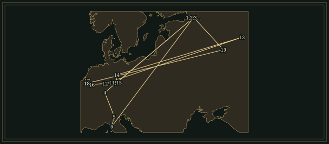
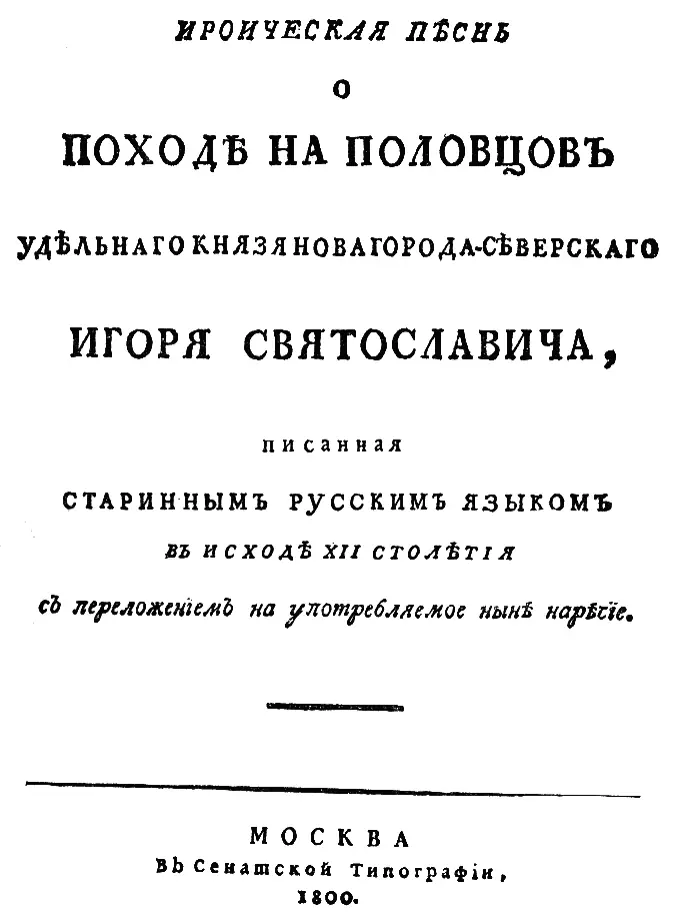

AlexanderBorodin
Russian chemist, professor at the Medical-Surgical Academy in Saint Petersburg, who composed two symphonies, two string quartets and the opera Prince Igor.
- Trained
- Medical-Surgical Academy, Saint Petersburg, 1850–58; chemistry under Nikolay Zinin; Heidelberg, 1859–61; guidance in composition from Mily Balakirev
- Posts
- Adjunct professor of chemistry at the Academy from 1862, professor from 1864; lecturer at the women’s medical courses from 1872
- Circle
- Balakirev · Mussorgsky · Cui · Rimsky-Korsakov · Stasov · Liszt at Weimar
- Output
- Two symphonies and part of a third, Prince Igor (completed by others), two string quartets, In the Steppes of Central Asia, songs, piano music
“For me, it is a relaxation, a pastime which distracts me from my principal business, my professorship.”
Life
Alexander Borodin was born in Saint Petersburg on 12 November 1833, which was 31 October in the Russian calendar of the day. His father, Luka Gedianov, was a Georgian prince, and his mother, Avdotya Antonova, a soldier’s daughter. As was usual in such cases, the boy was registered as the son of one of Gedianov’s serfs, Porfiry Borodin. He was taught at home. His first compositions were a flute concerto of 1847 and a trio for two violins and cello on a theme from Meyerbeer’s Robert le diable. With his friend Mikhail Shchiglev he played the symphonies of Haydn, Beethoven and Mendelssohn as piano duets, and he learnt the cello.
1850–62Medicine and chemistry
In 1850 Borodin entered the Medical-Surgical Academy, and from his third year he worked in the laboratory of the chemist Nikolay Zinin. Zinin named him as his successor and warned him in public that “you make a mistake in hunting two hares at once”. In the autumn of 1856, as a young army surgeon, Borodin met the seventeen-year-old guards officer Mussorgsky at a military hospital. He took his doctorate in medicine in 1858, and in 1859 he was sent abroad for three years, most of them in Heidelberg, where he worked in Erlenmeyer’s laboratory with Mendeleev among his colleagues. In Heidelberg in 1861 he met the pianist Ekaterina Protopopova, who played Schumann and Chopin to him. They married after his return to Saint Petersburg in 1862.
1862–77Balakirev’s circle
That year he joined Mily Balakirev’s circle, where Mussorgsky was already a member. Rimsky-Korsakov, then away on a naval cruise, met him in 1865. Balakirev played the great works of Beethoven, Schumann, Berlioz and Glinka with him as piano duets, analysed their form, and reproached him for treating his own compositions as unimportant. Borodin began a Symphony in E♭ major, finished it in 1867, and heard it first under Balakirev at the Russian Musical Society in January 1869. The first movement drew little applause and the scherzo was encored. By then he was adjunct professor of chemistry at the Academy, and from 1864 a full professor. He lived in a flat in the Academy building beside his laboratory until his death. Rimsky-Korsakov, calling there, found him distilling a colourless gas from one vessel to another and told him that he was “transfusing emptiness into vacancy”.
Teaching and committees took up more of his time than music. From 1872 he lectured in chemistry at the medical courses for women, which he had helped to found, and women doctors laid a silver crown on his coffin inscribed to “the founder, protector and defender of the School of Medicine for Women”. In a letter of 1876 to Lyudmila Karmalina he explained that in winter he could compose only when ill enough to give up his lectures: “never say to me, ‘I hope you are well,’ but, ‘I hope you are ill.’”
1869–77Prince Igor and the Second Symphony
The critic Vladimir Stasov proposed an opera on the twelfth-century Tale of Igor’s Campaign in 1869. Borodin wrote the libretto himself after studying chronicles and epic poems and collecting Asian melodies, composed several numbers, and put the work aside. In 1872 he wrote the fourth act of Mlada, an opera-ballet proposed by the theatre director Gedeonov, with acts shared among Borodin, Cui, Mussorgsky and Rimsky-Korsakov. The project was dropped because of its cost, and Borodin used some of the music in Igor, which he took up again in the winter of 1874 and wrote in intervals for the rest of his life. The Symphony No. 2 in B minor, begun in 1869, was first played in February 1877 under Nápravník and had no success. Stasov reported that Borodin had pictured the gathering of the Russian princes in the first movement, a bard’s song in the Andante and a heroes’ feast in the finale.
1877–86Liszt and In the Steppes of Central Asia
In the summer of 1877 Borodin travelled through German university towns with two pupils. From Jena he went to Weimar on 1 July and called on Liszt, who greeted him with “You have written a fine symphony”, said that he had played it to the Grand Duke two days before, and praised Borodin’s piano arrangement. Borodin said that he was criticised for modulating too much. “Do not touch it, alter nothing,” Liszt answered, and scolded him for leaving his scores unpublished. On 20 May 1880 the Allgemeiner Deutscher Musikverein gave the First Symphony at its festival in Baden-Baden. Liszt heard the rehearsals and the concert, and wrote in September that its orchestration was “written by a master hand”.
In 1879 Rimsky-Korsakov, Borodin and other composers were asked for music to accompany tableaux vivants marking the twenty-fifth anniversary of Alexander II’s reign. The entertainment was dropped, and Borodin’s contribution, In the Steppes of Central Asia, was played at concerts. A programme note printed in the score describes a caravan escorted by Russian soldiers crossing the desert while a Russian song and an Eastern melody sound together and die away. In June 1881, back at Weimar, Borodin learned that Liszt liked the piece and wanted a four-hand arrangement by the next day. Borodin dedicated it to him. The orchestral score was published in 1882.
The Second String Quartet, in D major, was written in the summer of 1881 and dedicated to his wife. Belgium took up his music in 1885 and 1886, largely through Countess Mercy-Argenteau. At the Antwerp Exhibition in September 1885 the Steppes was played on the 9th, the Second Symphony on the 16th and the First on the 19th. Borodin declined to conduct, and when called on made a speech to the orchestra. He returned with Cui at the turn of 1885–86 for concerts at Liège and Brussels, where the Second Symphony was repeated at the Popular Concerts. In May 1886 he wrote that the Steppes had “gone the round of Europe from Christiania to Monaco”, and that it had been encored in Vienna and Paris.
He was working on a third symphony when he died on 27 February 1887 (15 February in the Russian calendar), at a party in his flat. He was wearing Russian national costume. The cause of death was a ruptured aneurysm. Rimsky-Korsakov wrote that Borodin had been “gay and animated, among guests gathered at his house”. He was buried in the Alexander Nevsky Monastery beside Mussorgsky.
1887–90Prince Igor completed
Rimsky-Korsakov and Stasov carried Borodin’s manuscripts to Rimsky-Korsakov’s house on the morning after his death. Konchak’s aria, the first chorus, the Polovtsian Dances, Yaroslavna’s lament, Galitsky’s song, the arias of Konchakovna and Vladimir and the closing chorus were orchestrated. Much of the rest existed in piano sketches or rough drafts, and the third act had the least music of all. Glazunov wrote out from memory the overture he had heard Borodin play and filled the gaps in Act III. Rimsky-Korsakov orchestrated and completed the remainder in 1887–88. The two men also added music of their own, and this has been disputed. The overture, the March of the Polovtsy and two movements of the Third Symphony were first played at a concert in Borodin’s memory in the 1887–88 season. Belyayev published the score in 1889, and Prince Igor was staged at the Mariinsky Theatre in Saint Petersburg on 23 October 1890 in the Russian calendar.
Places

All 22 places, with sources
- Saint Petersburg · 1833-11-12 · born
Born in Saint Petersburg on 31 October in the Russian calendar. The Saint Petersburg State Library gives the house as no. 9 Gagarinskaya Street. The coordinates are for the city, not the house.
Saint Petersburg State Library: on the 190th anniversary of A. P. Borodin’s birth · Stephen Walsh, Who Was Alexander Borodin? (Chamber Music Society of Lincoln Center)
- Saint Petersburg, Medical-Surgical Academy · 1850–1858 · studied
Entered the Academy in 1850; worked in Zinin’s chemical laboratory from his third year; took the doctorate in medicine on 3 May 1858 (Russian calendar). The coordinates are those of the city and do not mark the Academy’s buildings.
Alfred Habets, Borodin and Liszt, ch. I (admitted 1850; Zinin’s laboratory) · Russian Biographical Dictionary, vol. 3 (1908): Borodin (doctorate of 3 May 1858)
- Saint Petersburg, military hospital · 1856 · worked
Appointed army surgeon at a military hospital in 1856. He met the officer Modest Mussorgsky there in the autumn, according to Borodin’s article on Mussorgsky of 1881.
Alfred Habets, Borodin and Liszt, ch. I (Borodin’s account of meeting Mussorgsky, autumn 1856) · Russian Biographical Dictionary, vol. 3 (1908): Borodin (posted to the Second Military Land Hospital, 1856)
- Heidelberg · 1859–1861 · studied
Sent abroad for three years in 1859, he spent most of them in Heidelberg, working in Erlenmeyer’s laboratory beside Mendeleev. He met Ekaterina Protopopova there in 1861. A sextet of his was played in Heidelberg in 1860.
Alfred Habets, Borodin and Liszt, ch. II · Russian Biographical Dictionary, vol. 3 (1908): Borodin
- Verona · 1860 · travelled
On a journey through northern Italy in the spring of 1860 with Mendeleev, Austrian police stopped their carriage near Verona and took Borodin for an escaped prisoner. The story is Mendeleev’s. Coordinates mark the city.
Alfred Habets, Borodin and Liszt, ch. II (Mendeleev’s account)
- Pisa · 1861–1862 · worked
Went to Pisa with Protopopova on a doctor’s advice and worked in the university laboratory on fluorine compounds, the research that led to his paper on benzoyl fluoride in 1862.
Saint Petersburg State Library: on the 190th anniversary of A. P. Borodin’s birth · Russian Biographical Dictionary, vol. 3 (1908): Borodin (work on fluorine compounds in Italy) · Takashi Okazoe, history of organofluorine chemistry, Proc. Jpn. Acad. B 85 (2009) (benzoyl fluoride, 1862)
- Saint Petersburg, Medical-Surgical Academy (professor) · 1862–1887 · worked
Adjunct professor of chemistry from 1862 and professor from 1864. He lived in a flat in the Academy building beside his laboratory until his death. From 1872 he also lectured at the medical courses for women.
Rimsky-Korsakov, My Musical Life, ch. VI (the flat near the Liteyny Bridge) · Russian Biographical Dictionary, vol. 3 (1908): Borodin (1862, 1864, 1872) · Alfred Habets, Borodin and Liszt, ch. II
- Saint Petersburg, Symphony No. 1 · 1869-01 · premiere
First performance of the Symphony in E♭ major, conducted by Balakirev at a Russian Musical Society concert in the Hall of the Nobility, on 4 January in the Russian calendar. Coordinates mark the city, not the hall. Symphony No. 1 in E♭ major.
- Saint Petersburg, Symphony No. 2 · 1877-02 · premiere
First performance of the Symphony in B minor under Nápravník, on 2 February in the Russian calendar, in the Hall of the Knights. Habets says it had no success. Coordinates mark the city, not the hall. Symphony No. 2 in B minor.
- Jena · 1877-06-30–1877-07 · travelled
Stayed in rented rooms in Jena in July 1877 during a tour of German university towns with two pupils, and wrote to his wife from there on 3, 12 and 18 July.
Alfred Habets, Borodin and Liszt, part II, letters of July 1877
- Weimar · 1877-07-01 · travelled
Called on Liszt in the Marienstrasse. Liszt told him he had played the First Symphony to the Grand Duke two days earlier. Symphony No. 1 in E♭ major.
Alfred Habets, Borodin and Liszt, part II, letter of 3 July 1877
- Marburg · 1877-07-22 · travelled
Wrote to his wife from Marburg on 22 July 1877, having met several professors there.
Alfred Habets, Borodin and Liszt, part II, letter of 22 July 1877
- Kineshma · 1880 · travelled
Spent the summer of 1880 at an old manor house on a hill above the Volga, eight versts from Kineshma in the Kostroma province, arriving on 22 June in the Russian calendar. The coordinates mark the town.
Alfred Habets, Borodin and Liszt, ch. VII (Borodin’s letter from Sokolovo)
- Magdeburg · 1881-06 · travelled
At the festival of the Allgemeiner Deutscher Musikverein in June 1881, where he saw Liszt again; he left for Weimar on 14 June.
Alfred Habets, Borodin and Liszt, part II: preface and letters to Cui and to his wife, June 1881
- Weimar, 1881 · 1881-06-14 · travelled
Visited Liszt a second time. Liszt liked In the Steppes of Central Asia and asked for a four-hand arrangement by the next day. Borodin dedicated the piece to him. In the Steppes of Central Asia.
Alfred Habets, Borodin and Liszt, part II, letter of 19 June 1881
- Liège · 1885-08 · travelled
Visited Liège and the Countess Mercy-Argenteau’s château at Argenteau in August 1885, and wrote to his wife that he was being taken from breakfasts to dinners and suppers where Russian music was played.
Alfred Habets, Borodin and Liszt, ch. VIII (letter of August 1885)
- Antwerp · 1885-09-09–1885-09-19 · heard
At the Antwerp International Exhibition, concerts of his music were played on 9 September (the Steppes), 16 September (Symphony No. 2) and 19 September (Symphony No. 1). He declined to conduct and made a speech to the orchestra.
Alfred Habets, Borodin and Liszt, ch. VIII (letter of 21 September 1885)
- Brussels · 1886-01 · heard
With Cui in Belgium at the turn of 1885–86 (25 December in the Russian calendar). His Second Symphony was played in Brussels at the Grande Harmonie and the Théâtre de la Monnaie on successive days.
Alfred Habets, Borodin and Liszt, ch. VIII (letters of December 1885 and January 1886)
- Moscow · 1886-09–1886-11 · travelled (inferred)
Spent most of the autumn of 1886 in Moscow caring for his wife, who was seriously ill, and for his mother-in-law. The months are an estimate; Habets says only “autumn”.
- Tikhvin Cemetery, Alexander Nevsky Monastery · 1887 · buried
Buried in the cemetery of the Alexander Nevsky Monastery beside Mussorgsky. Students carried the coffin through the city.
Alfred Habets, Borodin and Liszt, ch. IX · Saint Petersburg State Library: on the 190th anniversary of A. P. Borodin’s birth
- Saint Petersburg, flat in the Academy building · 1887-02-27 · died
Died in his flat during a party, on the evening of 15 February in the Russian calendar. Rimsky-Korsakov heard of it from Stasov the next morning. Coordinates mark the city.
Rimsky-Korsakov, My Musical Life, ch. XX · Alfred Habets, Borodin and Liszt, ch. IX · Boston Symphony Orchestra: Overture to Prince Igor (Harlow Robinson)
- Mariinsky Theatre · 1890-11-04 · premiere
First staging of Prince Igor, completed by Rimsky-Korsakov and Glazunov, on 23 October 1890 in the Russian calendar (4 November in the Western calendar). Kuchera rehearsed it after Nápravník declined to conduct. Prince Igor.
Influences
Teachers, encounters and borrowed music, each with its account and sources in the Web of Influence.
Influences received
Influences passed on
The Sound
♮Harmony
The Russian Biographical Dictionary of 1908 notes fifths placed one above another in the Andante of the First Symphony. It also names the song The Sleeping Princess as an example of the interval of a second used as a harmony in its own right, together with a whole-tone scale that Glinka and Dargomyzhsky had used before him. In Golos in 1874 the critic Laroche complained that Borodin “must always introduce a dissonance somewhere”.
𝄾Wide leaps
Mussorgsky’s word for the pizzicato passages of widely separated notes in the scherzo and finale of the First Symphony was “pecking” (klevaniya). The Russian Biographical Dictionary lists the same figure in the middle of Konchak’s aria and in the overture to Prince Igor, where it falls through wide intervals in accompaniment or melody. Borodin repeated the word when he described Liszt playing the symphony at Weimar.
𝄞Eastern colour
In April 1875 Borodin told Karmalina that he had written a Polovtsian march and “Oriental dances, for the Polovtsi were an eastern people”. He had collected Eastern melodies for the opera and had songs of Central Asia sent to him. In the Steppes of Central Asia combines a Russian song with an Eastern melody.
𝄢Melody over recitative
Writing to Karmalina in 1876 about Igor, Borodin said: “Recitative does not enter into my nature or disposition.” He preferred melody and “definite and concrete forms”, with the voices first and the orchestra second. Habets notes that Prince Igor keeps the old divisions of Russian opera into arias, cavatinas, duets and trios.
♩Chamber music
Stephen Walsh notes that Borodin was the only string player in the Five and the one with experience of chamber music. The First Quartet was written on a theme from the finale of Beethoven’s Op. 130; the Second is dedicated to his wife. The Second Quartet’s Scherzo and Notturno supplied tunes for the musical Kismet in 1953.
Works
A selection from the composer’s works.
- 1862–67Symphony No. 1 in E♭ majorOrchestraBegun at Balakirev’s urging. First played under Balakirev in January 1869; Liszt wrote in 1880 that its instrumentation was “written by a master hand”.
- 1867–70Songs: The Sleeping Princess, Song of the Dark Forest, The Sea Queen, The SeaVoice and pianoHabets dates the first to 1867, the second to 1868 and The Sea to 1870, and ranks The Sea first among them.
- 1869–77Symphony No. 2 in B minorOrchestraFirst played in February 1877 under Nápravník. Stasov’s account gives the first movement as the gathering of the Russian princes, the Andante as a bard’s song and the finale as a feast.
- 1869–87Prince IgorOpera in a prologue and four actsLibretto by Borodin after the Tale of Igor’s Campaign. Completed and partly orchestrated by Rimsky-Korsakov and Glazunov; first staged at the Mariinsky Theatre on 23 October 1890 in the Russian calendar. The Polovtsian Dances end Act II.
- 1872Mlada, Act IVOpera-ballet; chorus and orchestraBorodin’s share of the joint work proposed by the theatre director Gedeonov. The production was abandoned; part of the music went into Prince Igor.
- 1874–79String Quartet No. 1 in A majorTwo violins, viola and celloWritten on a theme from the finale of Beethoven’s Quartet Op. 130 and dedicated to Rimsky-Korsakov’s wife.
- 1880In the Steppes of Central AsiaOrchestraWritten for the tableaux vivants of 1880 that were never given. Dedicated to Liszt; published by Rahter, Hamburg, in 1882.Recordings in the Hall
- 1881String Quartet No. 2 in D majorTwo violins, viola and celloDedicated to his wife. The Notturno and the second theme of the Scherzo were adapted for Kismet (1953).Recordings in the Hall
- 1885
- 1886–87Symphony No. 3 in A minor (unfinished)OrchestraTwo movements were written down by Glazunov from Borodin’s sketches and from memory and played in 1887–88.
In the Score
Short examples, engraved and playable.
In the Steppes of Central Asia — bars 5–9Russian song in the clarinet
Whole-tone scale — schematicSix whole-tone steps
Stacked fifths — schematicFifths built one above another
Sister Arts

Vasnetsov took the subject from the Tale of Igor’s Campaign, the poem on which Borodin based Prince Igor, and chose the moment after the defeat. It was shown at the eighth exhibition of the Itinerants in 1880 and bought by Pavel Tretyakov. Borodin was then writing the Polovtsian scenes of his opera.

Roerich designed the sets and costumes for Michel Fokine’s Polovtsian Dances, which Diaghilev’s company gave at the Théâtre du Châtelet in Paris on 19 May 1909 with the music of Act II of Prince Igor. The Library of Congress lists the music as completed and partly orchestrated by Rimsky-Korsakov and Glazunov.


The text of the twelfth-century poem was printed in 1800. When Borodin prepared his libretto he read chronicles and other epic poems from the same period, and Habets observes that he followed the poem’s situations closely.
Recommended recordings
- String Quartet No. 2 in D major; Piano Quintet in C minorGoldner String Quartet; Piers Lane, pianoHyperion, CDA68166 · 2017Recorded in April 2016 at Potton Hall, Dunwich, with the Second Quartet and the Piano Quintet on one disc.
- Symphony No. 2; Petite Suite (orchestrated Glazunov); Polovtsian Dances, orchestral versionRoyal Stockholm Philharmonic Orchestra; Gennady RozhdestvenskyChandos, CHAN 9386 · 1995Recorded in the Concert Hall, Stockholm, in March 1993 and March 1994. The Polovtsian Dances run to 15:07 in eight numbers.
- In the Steppes of Central Asia; Symphonies Nos. 1 and 2Royal Philharmonic Orchestra; Vladimir AshkenazyDecca · 1994Credited ℗ 1994 Decca Music Group on the label’s YouTube release of the Steppes; produced by Andrew Cornall.
Where to hear more
- String Quartet No. 2 in D major; Piano Quintet in C minor2017Goldner String Quartet; Piers Lane, piano · Hyperion, CDA68166 · April 2016, Potton Hall, Dunwich, Suffolk
The Second Quartet runs 27:51 on Hyperion’s disc, which also holds the Piano Quintet and a Cello Sonata in B minor. The label’s 3:01 trailer carries extracts from the quartet’s Scherzo and from the quintet and the sonata.
- Symphony No. 2 in B minor; Petite Suite (orchestrated Glazunov); Polovtsian Dances, orchestral version1995Royal Stockholm Philharmonic Orchestra; Gennady Rozhdestvensky · Chandos, CHAN 9386 · 30–31 March 1993 and 18 March 1994, Concert Hall, Stockholm
Chandos lists the Second Symphony at 29:43 and the Petite Suite at 29:55. The Polovtsian Dances run to 15:07 in eight numbers, from a Presto at the start to an Allegro con spirito at the end.
These recordings are under copyright, so the Hall cannot play them; the links go to the labels’ and artists’ own uploads and to streaming services.
Lineage
Balakirev guided his first symphony; Zinin taught him chemistry. Borodin described himself in his student years as “impregnated with Mendelssohnism”, and his First Quartet takes a theme from Beethoven’s Op. 130. Liszt praised his symphonies at Weimar and received the dedication of the Steppes. Rimsky-Korsakov and Glazunov completed Prince Igor. In 1953 Robert Wright and George Forrest adapted Borodin’s melodies for the Broadway musical Kismet.
Further reading
- Alfred Habets, Borodin and Liszt: I. Life and Works of a Russian Composer; II. Liszt, as Sketched in the Letters of Borodin, translated by Rosa Newmarch (London: Digby, Long, second edition, c. 1896).biography and letters
The book covers what Borodin wrote about his work, his wife and Liszt. The second part prints his letters from Weimar in 1877 and 1881, and the first part quotes his letters on Prince Igor and the Belgian concerts.
- Nikolay Rimsky-Korsakov, My Musical Life, translated by Judah A. Joffe, edited by Carl Van Vechten (New York: Knopf, 1923).memoir
Rimsky-Korsakov described how the composers around Balakirev worked together and how Prince Igor was completed, including Borodin’s flat, the tableaux of 1879–80 and the sorting of the manuscripts in 1887.
- Serge Dianin, Borodin (London and New York: Oxford University Press, 1963).biography
The chapters follow the life from 1833 to 1887, then take the symphonies, chamber and piano music, songs, Mlada and Prince Igor in turn; a list of works is appended.
- Stephen Walsh, “Who Was Alexander Borodin? A Brief Introduction”, Chamber Music Society of Lincoln Center.introduction
Walsh gives a short account of his two careers and of the chamber music, covering the circle around Balakirev, the two quartets and the unfinished Igor in a few pages.
- Takashi Okazoe, “Overview on the history of organofluorine chemistry from the viewpoint of material industry”, Proceedings of the Japan Academy, Series B 85 (2009), beginning on p. 276.history of chemistry
The opening section deals with Borodin’s place in chemistry. It describes his halogen exchange with fluoride, reported in 1862, as the first synthesis of an organofluorine compound by that route.
- Harlow Robinson, “Overture to Prince Igor”, programme note, Boston Symphony Orchestra.programme note
The note sets out how much of Prince Igor is Borodin’s: what he had orchestrated, what Rimsky-Korsakov and Glazunov supplied, and how Glazunov wrote the overture from memory.
Cite this page
Contrapunctus. “Alexander Borodin.” Accessed 20 October 2026. https://mottopanikeiku.github.io/contrapunctus/composers/borodin.html.
@misc{contrapunctus-composers-borodin,
author = {{Contrapunctus}},
title = {Alexander Borodin},
howpublished = {\url{https://mottopanikeiku.github.io/contrapunctus/composers/borodin.html}},
note = {Accessed 2026-10-20}
}